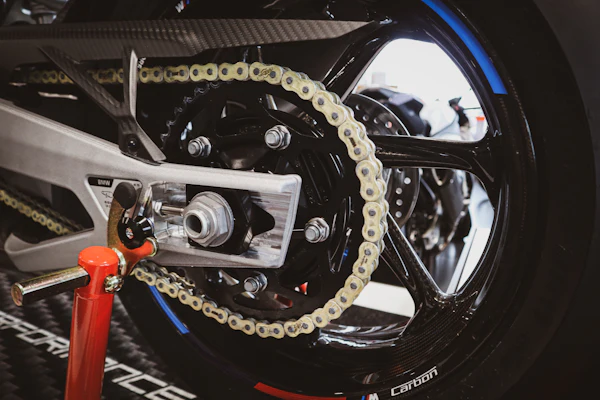

Fehler 404
Hier ist die Kette abgesprungen
Diese Seite gibt es nicht oder nicht mehr. Vielleicht hilft dir eine von diesen weiter:

Fehler 404
Diese Seite gibt es nicht oder nicht mehr. Vielleicht hilft dir eine von diesen weiter:
